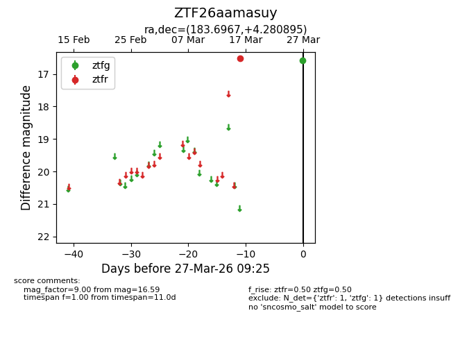
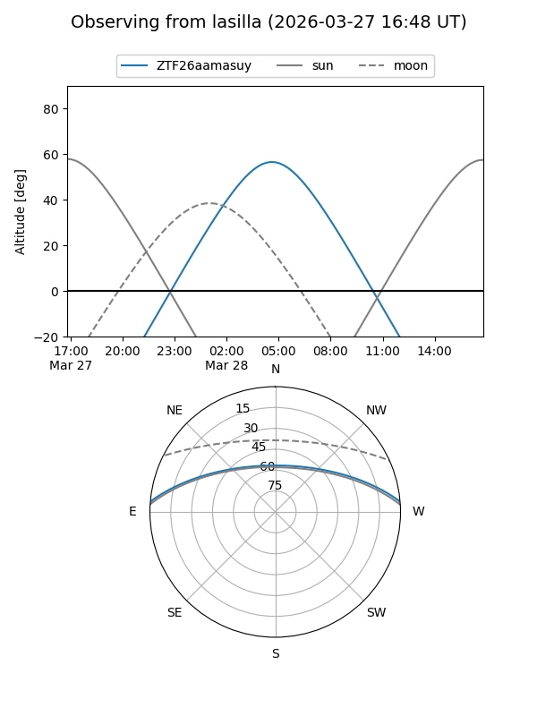
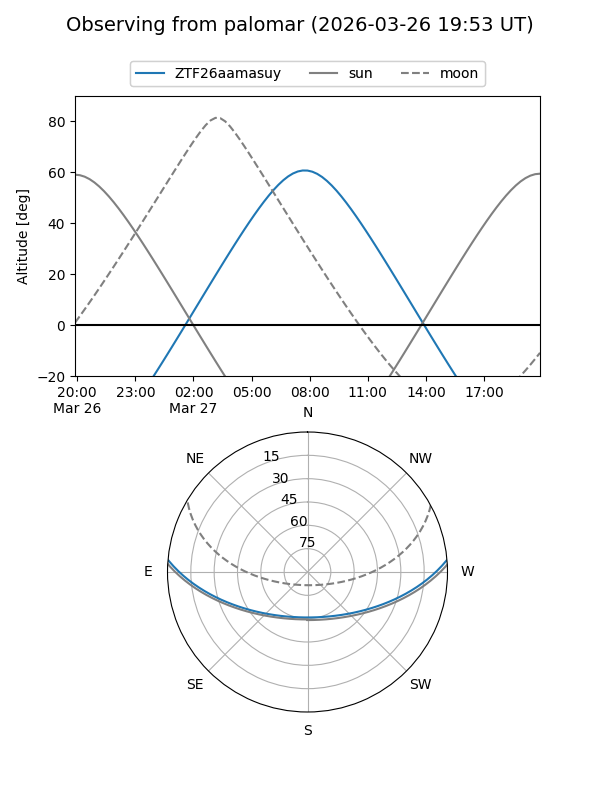

ZTF26aamasuy
Target ZTF26aamasuy at 2026-03-27 09:28
Aliases and brokers:
FINK: link
Lasair: link
ALeRCE: link
alt names
ZTF26aamasuy (ztf,fink_ztf)
Coordinates:
equatorial (ra, dec) = 183.6967,+4.28090
equatorial (HMS+DMS) = 12:14:47.22,+04:16:51.22
galactic (l, b) = (280.3848,+65.53550)
Flags:
Photometry:
last ztfg=16.59, ztfr=16.53
1 ztfg, 1 ztfr detections
Lightcurve

Visibility


Additional plots